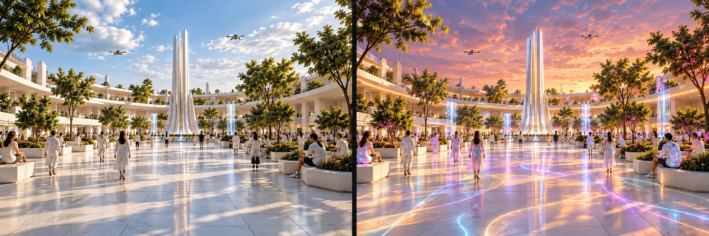

A quietude era a primeira coisa que atingia Tupac. Ele pisou na Praça da Convergência, o coração palpitante da metrópole, e sentiu a pele arrepiar. O ar era puro, artificialmente circulado, e carecia do cheiro de terra molhada e vegetação a que ele estava acostumado. Sua cabeça latejava um pouco como resultado dos exageros da noite anterior.
Com a sua realidade aumentada neural — a AURA — permanentemente desativada desde sua maioridade, o mundo que seus olhos viam na metrópole era... nu.
A praça central era um vasto deserto de branco. As superfícies dos edifícios eram lisas, sem janelas, como túmulos geométricos de mármore. O chão era uma laje monocromática, em maior parte branca e fosca. As pessoas, os citadinos, moviam-se como sombras silenciosas, suas roupas em tons neutros. Não havia letreiros, não havia anúncios, não havia cardápios nas entradas das lojas — apenas portas lacradas e nomes em texto simples, quase como códigos. Um sussurro baixo, o ruído de passos e a música de fundo calibrada pelo time de Psicoacústica formavam a trilha sonora daquele mundo esvaziado. Tudo era asséptico, ordenado e profundamente morto.
Ele estava lá por necessidade, não por prazer. No bolso, sua lista: um modulador de frequência neural e um biossintetizador de alcaloides. Ferramentas para o seu ofício, para fabricar os dispositivos de transe que sua comunidade usava para se conectar com os ritmos mais profundos da natureza. Essas coisas não eram comumente entregues na porta de casa. Ele precisava ir pessoalmente até o Emporium Assíncrono, uma loja que operava na interseção entre o mundo físico e o virtual.
Mas para encontrar o Emporium Assíncrono, ele sabia que teria que se render. A fachada era apenas uma parede branca e estaria perdida naquele deserto branco de fachadas monocromáticas. A informação que ele precisava estava na camada virtual.
Tupac respirou fundo, um ritual de preparação para o mergulho. Fechou os olhos por um momento, buscando a calma da sua floresta. Então, abriu-os e pensou no comando.
O mundo explodiu.

O mundo explodiu.
A transição foi tão violenta que ele deu um passo para trás, atordoado. O sussurro monocromático foi devorado por uma sinfonia de cacofonia visual e sonora. O edifício à sua frente, antes uma tumba de mármore, agora era uma torre de vidro e luz. Anúncios pulsantes de cerveja gen-modificada e férias na Lua brincavam no seu campo de visão. O céu leitoso foi substituído por auroras boreais digitais e projeções de luz que dançavam sobre as fachadas dos edifícios.
As pessoas não eram mais sombras. Eram criaturas fantásticas. Roupas que mudavam de padrão e cor a cada passo, partículas de luz dançando ao redor.
— Bem-vindo de volta, Usuário Tupac Maslow — uma voz clara e suave soou dentro da sua cabeça. Era AURA, seu assistente pessoal telepático, uma presença obrigatória que ele mantinha sob rígido controle.
— Tempo desde o último acesso: 1 mês e 14 dias. Destaques atuais na Praça da Convergência: liquidação de final de temporada na “Moda Dinâmica”, show imersivo da artista MAYA no Obelisco e...
— Silenciar notificações não essenciais — pensou Tupac, com firmeza, sentindo uma pontada latejante já se formando atrás dos seus olhos.
— Confirmado — respondeu AURA.
Ele forçou sua atenção para a parede onde deveria estar o Emporium Assíncrono. Sua cabeça latejava com o esforço. Então, como um rasgo na realidade, um portal de energia roxa e dourada irrompeu na parede. Letras de fogo azul formaram o nome da loja.
— Bem-vindo ao Emporium Assíncrono, fornecendo peças de qualidade para mentes curiosas desde 2198.
Tupac engoliu em seco. A náusea começava a se misturar com a dor de cabeça.
Ele caminhou em direção ao portal, sentindo o peso do mundo digital como um manto de chumbo sobre os ombros. Cada holograma era um pequeno dreno na sua energia mental. Ele estava ali para comprar os componentes para seus dispositivos de transe natural. Mas, naquele momento, cercado por aquele festival de estímulos artificiais, Tupac teve uma certeza: a droga mais poderosa e perigosa da metrópole não estava à venda no Emporium Assíncrono. Ela estava no ar, sendo injetada diretamente no cérebro de todos.
Foi fácil comprar os itens para o ritual do Solstício de Verão. O vendedor já estava acostumado com a rotina de Tupac. Dentro da bolsa de fibra natural à sua cintura, os componentes pesavam como pedras. Eram ferramentas do seu ofício, justificáveis perante os mais radicais da comunidade. Eles produziam o transe que conectava o espírito aos ciclos da terra. Era uma linha tênue, mas Tupac conseguia caminhar nela.
Ao sair da loja, a porta se fechou atrás dele com um silvo suave. Tupac ofegou, encostando a nuca na parede fria e lisa do lado de fora. A enxaqueca latejava em suas têmporas, uma percussão sintonizada com os resquícios de jingles que ainda ecoavam na periferia de sua mente. Ele ordenou o desligamento do Assistente.
O mundo desmoronou. Os hologramas, as auroras boreais digitais, as roupas cintilantes — tudo se dissolveu, deixando para trás o deserto monocromático e silencioso da Praça da Convergência. A paz era quase física, um bálsamo após o assalto sensorial. Ele estava há menos de uma hora no centro e já sentia sua mente como um músculo torcido.